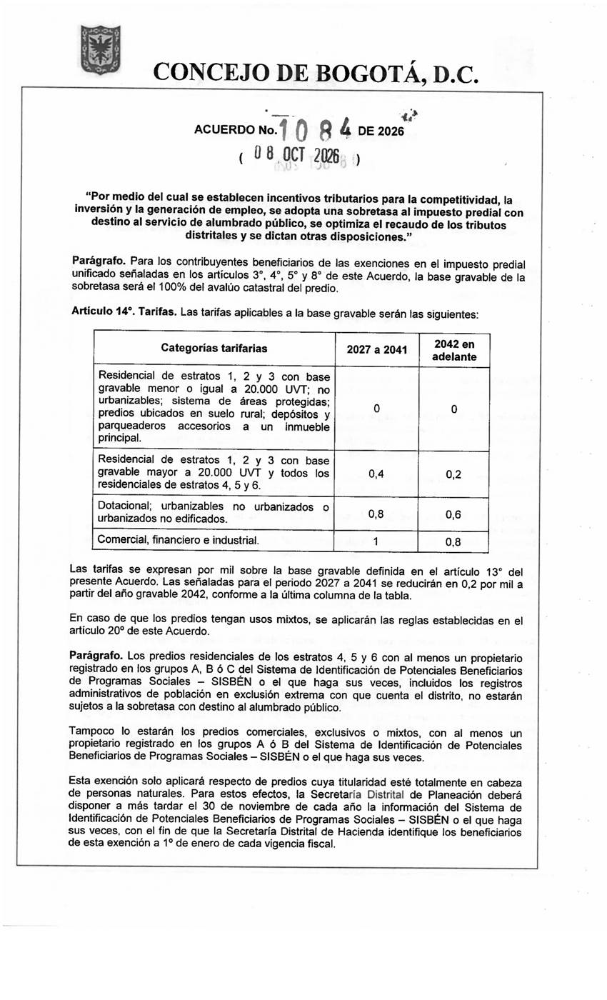
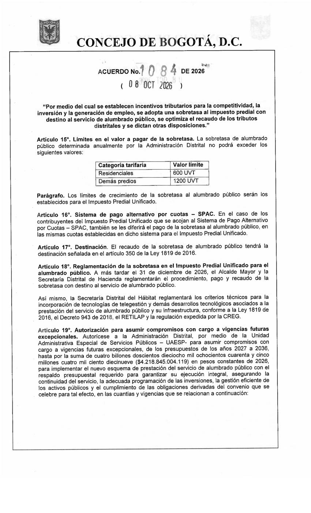

Art. 14 (tarifas por mil) en la página 19 del PDF y art. 15 (topes) en la página 20.


| Categoría | 2027 a 2041 | Desde 2042 |
|---|---|---|
| residencial_estratos_1_2_3_hasta_20000_uvt_no_urbanizables_areas_protegidas_rural_depositos_y_parqueaderos | 0 | 0 |
| residencial_estratos_1_2_3_mas_de_20000_uvt_y_estratos_4_5_6 | 0.4 | 0.2 |
| dotacional_urbanizables_no_urbanizados_o_no_edificados | 0.8 | 0.6 |
| comercial_financiero_e_industrial | 1 | 0.8 |
| Categoría | Límite (UVT) |
|---|---|
| residenciales | 600 |
| demas_predios | 1200 |
| Página del PDF | El OCR leyó | La imagen dice | Se usa |
|---|---|---|---|
| 20 | residenciales 500 UVT | residenciales 600 UVT | imagen |